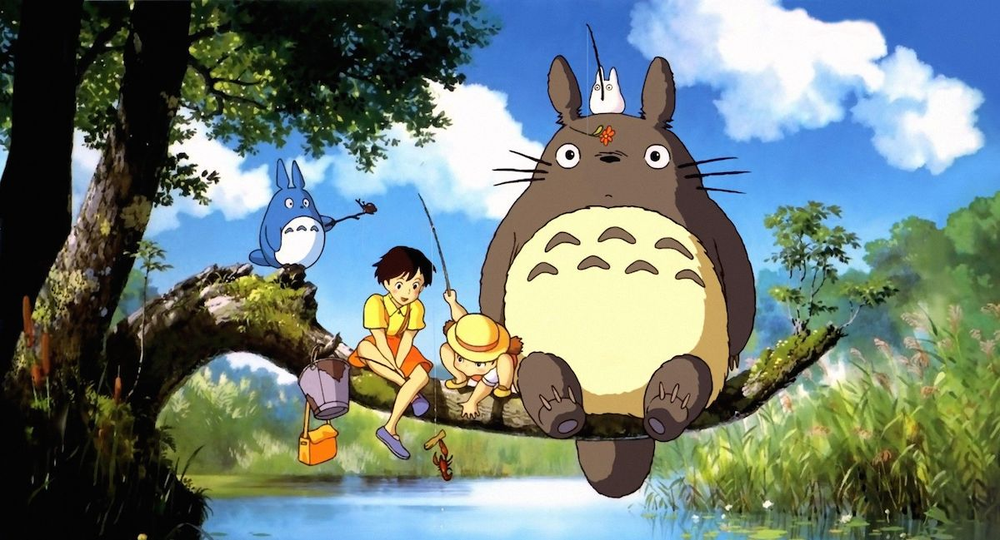
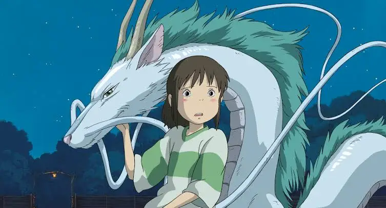
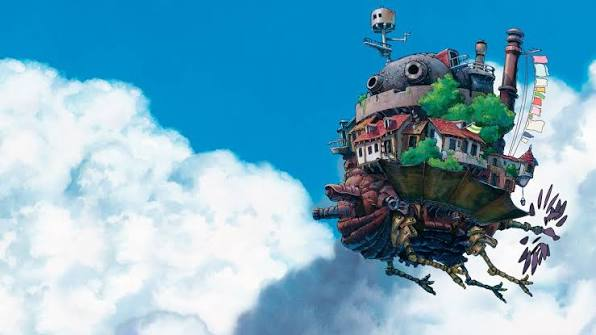

Die Geschichte von Studio Ghibli
Studio Ghibli ist ein japanisches Animationsstudio, das 1985 gegründet wurde. Zu den prägenden Personen des Studios gehören die Regisseure Hayao Miyazaki und Isao Takahata sowie der Produzent Toshio Suzuki. Gemeinsam beeinflussten sie die Entwicklung des japanischen Animationsfilms über mehrere Jahrzehnte hinweg.
Ein wichtiger Ausgangspunkt für die Gründung des Studios war der Erfolg von „Nausicaä aus dem Tal der Winde“. Der Film erschien bereits 1984 und damit noch vor der eigentlichen Gründung von Studio Ghibli. Viele Themen, die später typisch für das Studio wurden, sind jedoch bereits in diesem Film zu erkennen.
Woher kommt der Name Ghibli?
Der Name „Ghibli“ wurde von Hayao Miyazaki gewählt. Der Begriff bezeichnet einen heißen Wüstenwind und wurde außerdem für das italienische Flugzeug Caproni Ca.309 Ghibli verwendet. Miyazakis Interesse an Flugzeugen und Luftfahrt findet sich später auch in zahlreichen seiner Filme wieder. Mit dem Namen war sinngemäß die Idee verbunden, einen neuen Wind in die japanische Animationsbranche zu bringen.
Die Entwicklung des Studios
Der erste Film, der direkt unter dem Namen Studio Ghibli produziert wurde, war „Das Schloss im Himmel“ aus dem Jahr 1986. Zwei Jahre später erschienen „Mein Nachbar Totoro“ und „Die letzten Glühwürmchen“. Besonders Totoro entwickelte sich mit der Zeit zu einem der bekanntesten Symbole des Studios.
In den 1990er- und 2000er-Jahren wurde Studio Ghibli zunehmend auch außerhalb Japans bekannt. Filme wie „Prinzessin Mononoke“ und „Chihiros Reise ins Zauberland“ erreichten ein großes internationales Publikum.
„Chihiros Reise ins Zauberland“ erhielt 2002 den Goldenen Bären der Internationalen Filmfestspiele Berlin und gewann 2003 den Oscar als bester Animationsfilm. Damit gehörte Studio Ghibli endgültig zu den international bekanntesten Animationsstudios.
Auch viele Jahre später veröffentlichte das Studio weiterhin erfolgreiche Filme. „Der Junge und der Reiher“ erschien 2023 unter der Regie von Hayao Miyazaki und erhielt 2024 ebenfalls den Oscar als bester Animationsfilm.
Wichtige Meilensteine
- 1984: „Nausicaä aus dem Tal der Winde“ erscheint.
- 1985: Studio Ghibli wird gegründet.
- 1986: „Das Schloss im Himmel“ erscheint als erster Film des Studios.
- 1988: „Mein Nachbar Totoro“ und „Die letzten Glühwürmchen“ erscheinen.
- 1997: „Prinzessin Mononoke“ erscheint.
- 2001: „Chihiros Reise ins Zauberland“ erscheint.
- 2003: „Chihiros Reise ins Zauberland“ gewinnt den Oscar.
- 2023: „Der Junge und der Reiher“ erscheint.
- 2024: „Der Junge und der Reiher“ gewinnt den Oscar.
Filme und Erfolge
Studio Ghibli hat seit seiner Gründung zahlreiche Animationsfilme veröffentlicht. Die folgende Übersicht zeigt eine Auswahl bekannter Filme aus verschiedenen Jahrzehnten und deren ungefähres weltweites Kino-Einspielergebnis.
| Jahr | Film | Regie | Einspielergebnis weltweit |
|---|---|---|---|
| 1986 | Das Schloss im Himmel | Hayao Miyazaki | ca. 19,8 Mio. US-Dollar |
| 1988 | Mein Nachbar Totoro | Hayao Miyazaki | ca. 28,3 Mio. US-Dollar |
| 1997 | Prinzessin Mononoke | Hayao Miyazaki | ca. 231,4 Mio. US-Dollar |
| 2001 | Chihiros Reise ins Zauberland | Hayao Miyazaki | ca. 395,8 Mio. US-Dollar |
| 2004 | Das wandelnde Schloss | Hayao Miyazaki | ca. 239,6 Mio. US-Dollar |
| 2023 | Der Junge und der Reiher | Hayao Miyazaki | ca. 292,9 Mio. US-Dollar |
Quelle der Einspielergebnisse: The Numbers, weltweite Kino-Einspielergebnisse. Die Werte wurden auf eine Nachkommastelle gerundet.
Internationale Erfolge und Auszeichnungen
Studio Ghibli entwickelte sich von einem japanischen Animationsstudio zu einer international bekannten Marke. Besonders die Filme von Hayao Miyazaki erreichten auch außerhalb Japans ein großes Publikum.
Chihiros Reise ins Zauberland
„Chihiros Reise ins Zauberland“ gehört zu den international erfolgreichsten Werken des Studios. Der Film gewann 2002 den Goldenen Bären der Internationalen Filmfestspiele Berlin. 2003 folgte der Oscar als bester Animationsfilm.
Der Junge und der Reiher
Mehr als zwanzig Jahre später erhielt auch „Der Junge und der Reiher“ internationale Anerkennung. Der Film gewann 2024 den Oscar als bester Animationsfilm. Damit erhielt Hayao Miyazaki diese Auszeichnung erneut.
Studio Ghibli außerhalb des Kinos
Die Welt von Studio Ghibli ist heute nicht mehr nur in Filmen zu erleben. In Mitaka bei Tokio befindet sich das Ghibli Museum, das 2001 eröffnet wurde. Zusätzlich wurde 2022 in der japanischen Präfektur Aichi der Ghibli Park eröffnet. Dort werden Orte und Motive aus verschiedenen Filmen räumlich umgesetzt.
Ausgewählte Filme in Bildern



Einspielergebnisse im Vergleich
Das selbst erstellte Canvas-Diagramm vergleicht ausgewählte Studio-Ghibli-Filme anhand ihres weltweiten Kino-Einspielergebnisses. Die Grafik wird vollständig mit JavaScript im Canvas-2D-Kontext gezeichnet.
Audio und Video
In diesem Bereich werden selbst erstellte Audio- und Videoinhalte zum Thema Studio Ghibli eingebunden.
Audio
Audio noch einfügen
Video
Video noch einfügen
Eigene SVG-Grafik
Webseite als PDF
Diese Webseite kann über die Druckfunktion des Browsers als PDF-Datei gespeichert werden.
Eine bereits erstellte PDF-Version der Webseite kann auch direkt heruntergeladen werden.
Quellen
Für die Informationen auf dieser Webseite wurden verschiedene Quellen zu Studio Ghibli, seinen Filmen und Auszeichnungen verwendet.
- Studio Ghibli – offizielle Webseite – Informationen zum Studio und zu seinen Filmen.
- Academy of Motion Picture Arts and Sciences – Informationen zu den Oscar-Auszeichnungen.
- Internationale Filmfestspiele Berlin – Informationen zum Goldenen Bären.
- Ghibli Museum – Informationen zum Museum in Mitaka.
- Ghibli Park – Informationen zum Ghibli Park in Aichi.
- The Numbers – weltweite Kino-Einspielergebnisse der ausgewählten Filme.